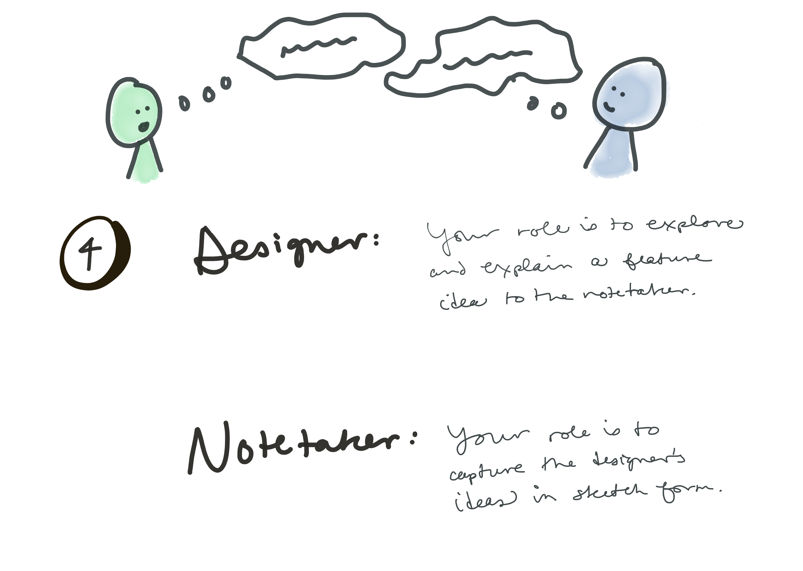
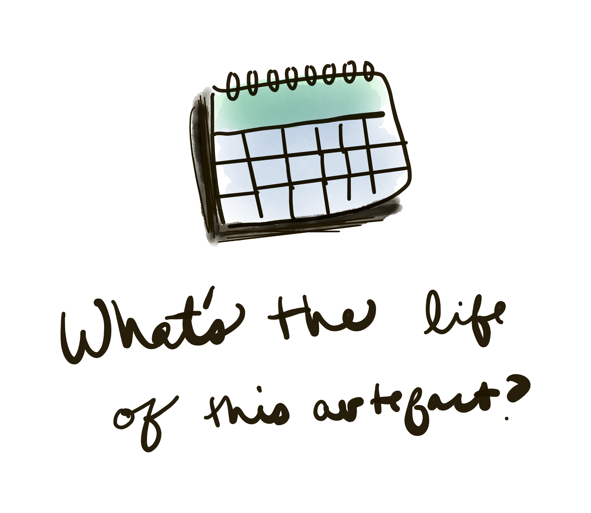

You're lauching a new SAAS platform called Nuzzl, a home automation app that coordinates your smart pet devices. You want to capture early user feedback in a way that is intuitive but not intrusive.


Design as it is right now...
Design as it should be...
High fidelity design is good at communicating look and feel, emotion, colors, typography.
Static design is poor at communicating interactions, application states, error states. Anything that changes over time. Additionally, it's easy to introduce unintended complexity to the design from tools like Sketch and Photoshop.